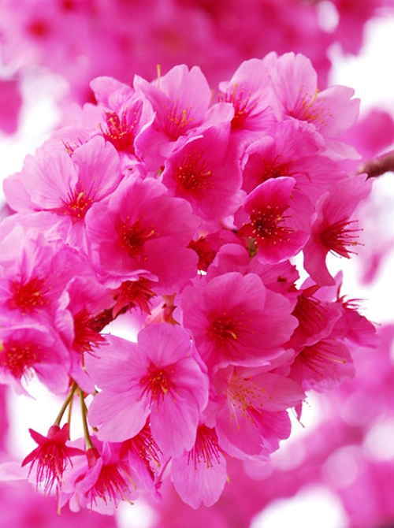

サクラは、バラ科サクラ属サクラ亜属に分類される落葉広葉樹である。春に白色や淡紅色から濃紅色の花を咲かせる。
CHERRY BLOSSOMS
A cherry tree is the deciduous broadleaf tree classified into the prunus cherry tree subgenus. I make a flower with the crimson color bloom from white and pink in spring.

sakura_PT
19/27